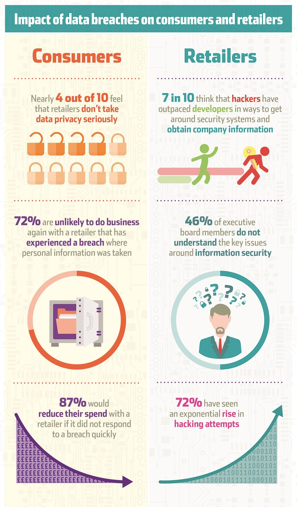
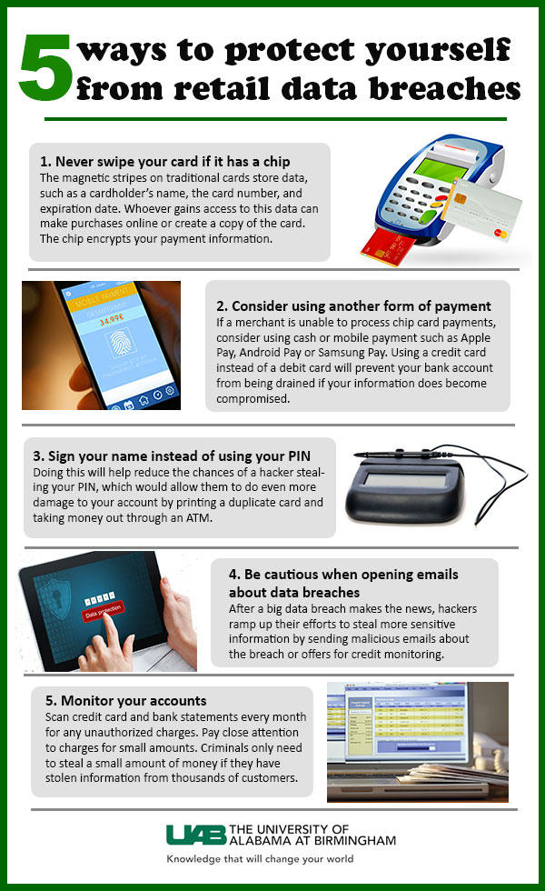

With the increase in the ability to collect, as well as store data, Big Data has become increasingly used
in all aspects of our lives. Big Data is a term that has been around since the 1990's and is credited to
John Mashey, a computer scientist from The
Pennsylvania State University. Big Data has many definitions and depending on how many people you ask, you
may get a different definition from each person. In this short article Big Data will refer specifically to
the amount of data that is being collected and analyzed by companies and corporations.
Companies have been expanding their usage of Big Data to not only gain information about their business and
predict market trends, but also to gain information about their customers and build custom profiles on each
one to target ads to each customer as well as sell these ‘data profiles’ to other corporations. The debate
as to whether customers are ok with this new form of targeted ads has been debated before, but this article
isn't meant to debate that topic, instead it’s about the amount of personal data that is collected by
businesses and whether there should be more regulations on security with this data.
 Credit: SecureLink
In the last couple of years there have been multiple high-profile data breaches where personal info that was
gathered by a company was kept improperly and became vulnerable. Most notably has been the credit card hacks
that took place at Home Depot
and Chipotle.
Both of which pale in comparision to the Equifax
breach which happened just this September.
Like all other major companies out there, Equifax gathered data on its customers and stored it for their own
uses. However, unlike other companies, Equifax is a credit reporting agency, which was one of the go to
agencies when lenders ran credit reports. This means that even if you haven't dealt with Equifax directly,
they probably still have data about you (including personal information, banking information, and even a
social security number). However even with all this personal data being stored, one would think that there
would have to be stringent security measures in place to ensure a breach won't happen. Unfortunately, this
was not the case and even after being
warned months in advanced that there was a security vulnerability, Equifax still choose to ignore it.
This breach lead to 143 million Americans being put at risk for identity theft, and unfortunately there's no
true way to know if you're information was compromised until it shows up being used somewhere else.
Unfortunately, in this age of Big Data companies have found a new product, the customer, and have realized
there is a profit in collecting personal data and then selling it others. And while many may not know that
this data is constantly being sold or have decided it’s not a big deal to them, there should at least be
guarantees that personal data that is collected should be kept under rigorous security standards and
possibly even government intervention, so that the consumer doesn't have to be concerned about their
information falling into the wrong hands due to carelessness.
While at the moment there is no guarantee that the personal data gathered by companies is kept securely, there are steps that you can take as a consumer to make sure that you are limiting your risks. The poster below from the University of Alabama at Birmingham lists 5 easy tips that can be used to protect yourself from retail data breaches.
 Credit: UAB